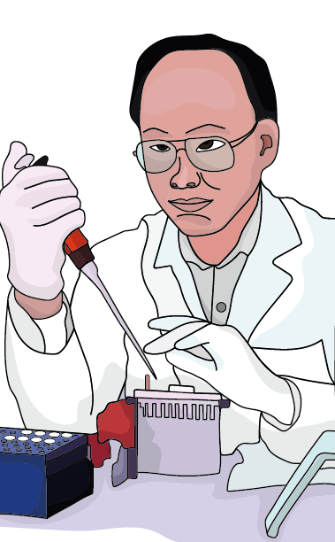
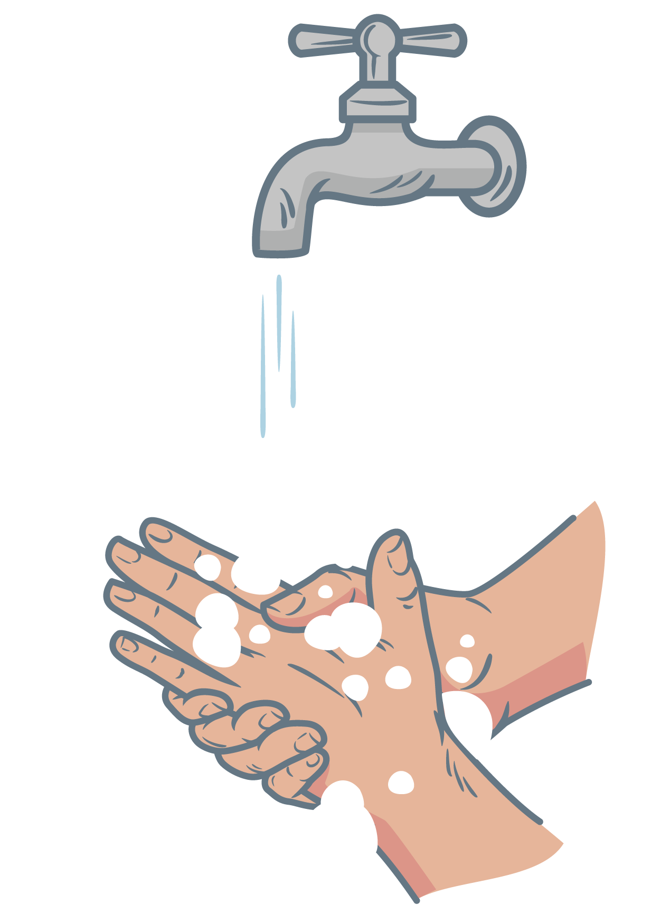
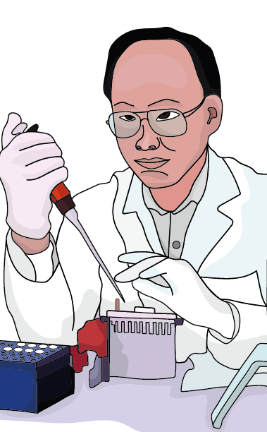
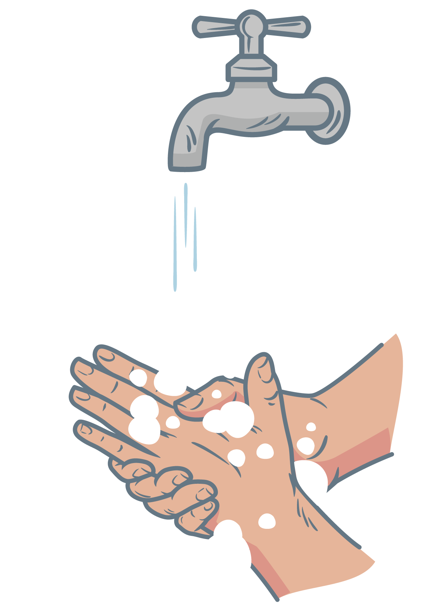

¿Cuáles son los agentes causales de la criptococosis y dónde se encuentran?
La criptococosis es causada por levaduras encapsuladas del complejo de especies Cryptococcus neoformans, (var. grubii y
var. neoformans) y del complejo de especies Cryptococcus gattii. Estas levaduras se encuentran en la naturaleza; para el
complejo de especies C. neoformans, (var. grubii y var. neoformans) especialmente en suelos enriquecidos con excremento
de aves y en árboles y para el complejo de especies C. gattii, en detritos de diferentes especies de árboles.
¿Cuáles son los principales factores de riesgo para desarrollar una criptococosis?
Los principales factores de riesgo que pueden contribuir a desarrollar la criptococosis son:
• VIH.
• Bajo recuento de linfocitos T CD4+.
• Trasplantes de órganos solido.
• Terapia inmunosupresora prolongada.
• Enfermedades autoinmunes.
¿Cómo identificar los agentes causales de la criptococosis?
La identificación se puede hacer a partir de muestras de líquido cefalorraquídeo, esputo, lavado broncoalveolar, orina,
biopsias, sangre, entre otros. Se debe realizar examen microscópico con la técnica de exclusión de la tinta china o
examen histopatológico con coloraciones (azul de Alcián, Mucicarmina de Meyer o plata metenamina) observándose
blastoconidias encapsuladas redondas u ovaladas; identificación fenotípica y aislamiento en medio como agar glucosado de
sabouraud para observar colonias mucoides, opacas, blancas o crema, agar urea (ureasa) y agar canavanina-glicina-azul de
bromotimol (CGB) para la identificación de especie C. gattii.
¿Cómo se trata un paciente con criptococosis?
El tratamiento consta de tres fases una de inducción por dos semanas con anfotericina B liposomal seguido de
fluocitosina más fluconazol, una fase de consolidación por ocho semanas con fluconazol y una fase final de mantenimiento
o profilaxis secundaria con fluconazol. Para pacientes VIH es importante iniciar terapia antirretroviral después del
tratamiento antifúngico.
Referencias y lecturas recomendadas:
1. Gómez BL, González Á, Tobón A, Restrepo Á. Fundamentos de las micosis humanas. CIB Fondo Editorial; 2018 Nov 16
2. Tello M, Gutiérrez E, Béjar V, Galarza C, Ramos W, & Ortega-Loayza A G. Criptococosis. Rev Med. Risaralda
2013;19(2):147-153


 



1. Baddley, JW, Forrest, GN; on behalf of the AST Infectious
Diseases Community of Practice. Cryptococcosis in solid organ
transplantation—Guidelines from the American Society of
Transplantation Infectious Diseases Community of Practice. Clin
Transplant. 2019; 33:e13543. https://doi.org/10.1111/ctr.13543
2. Castañeda E, Lizarazo J. Protocolo de estudio y manejo de los
pacientes con criptococosis. Infectio. 2012;16(3): 123-125
3. Escandón P, de Bedout C, Lizarazo J, Agudelo CI, Tobón Á, Bello
S, et al. Cryptococcosis in Colombia: Results of the national
surveillance program for the years 2006-2010. Biomédica. 2012
Sep;32(3):386-98
4. Escandón P, Lizarazo J, Agudelo CI, Chiller T y Castañeda E.
Evaluation of a rapid lateral flow immunoassay for the detection of
cryptococcal antigen for the early diagnosis of cryptococcosis in
HIV patients in Colombia. Med Mycol. 2013; 51:765-768
5. Escandón P, Lizarazo J, Agudelo C, Castañeda, E. Cryptococcosis
in Colombia: compilation and analysis of data from laboratory-based
surveillance. J Fungi, 2018; 4(1),
6. Firacative C, Torres G, Meyer W, Escandón P. Clonal dispersal of
Cryptococcus gattii VGII in an Endemic Region of
Cryptococcosis in Colombia. Journal of Fungi. 2019; 5(2):32
7. Firacative C, Meyer W, Castañeda E.
Cryptococcus neoformans and
Cryptococcus gattii species complexes in Latin America: a
map of molecular types, genotypic diversity, and antifungal
susceptibility as reported by the Latin American Cryptococcal Study
Group. J Fungi. 2021;7(4):282
8. Gómez Arias B, Zarco Montero LA. Meningeal criptococcosis:
clinical and laboratory characteristics. Acta Neurol Colomb
2011;27:9-27
9. Gómez BL, González Á, Tobón A, Restrepo Á. Fundamentos de las
micosis humanas. CIB Fondo Editorial; 2018 Nov 1
10. Jarvis JN, Lawrence DS, Meya DB, Kagimu E, Kasibante J, et al..
Single-dose liposomal amphotericin B treatment for cryptococcal
meningitis. NEJM. 2022;386(12):1109-20.
11. Kwon-Chung KJ, Fraser JA, Doering TL, Wang ZA, Janbon G, Idnurm
A, et al. Cryptococcus neoformans and Cryptococcus gattii, the
etiologic agents of cryptococcosis. Cold Spring Harbor perspectives
in medicine. 2014 Jul 1;4(7):a019760.
12. Lin X, Heitman J. The biology of the Cryptococcus neoformans
species complex. Annu Rev Microbiol. 2006;60:69-105
13. Migone C, Ford N, Garner P, Eshun‐Wilson I. Updating guidance
for preventing and treating cryptococcal disease: how evidence and
decisions interface. CDSR. 2018;11:ed000130.
14. Montoya MC, Magwene PM, Perfect JR. Associations between
Cryptococcus genotypes, phenotypes, and clinical parameters of human
disease: a review. J Fungi. 2021;7(4):260
15. Rajasingham R, Smith RM, Park BJ, Jarvis JN, Govender NP,
Chiller TM, et al. Global burden of disease of HIV-associated
cryptococcal meningitis: An updated analysis. Lancet Infect. Dis.
2017; 17: 873–881
16. Tello M, Gutierrez E, Béjar V, Galarza C, Ramos W, Ortega-Loayza
AG. Cryptococcosis. RMR. 2013;19(2):147-53